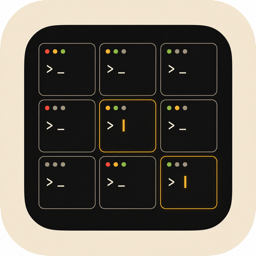

Aggregate status in the menu bar.
The icon turns red when any session is blocked on you, yellow while one is thinking, green when everything's idle. One click for the full list.

Manage every running Claude Code session from your menu bar.
No dashboards, no analytics, no streaks. Each surface answers exactly one question.
The icon turns red when any session is blocked on you, yellow while one is thinking, green when everything's idle. One click for the full list.
iTerm and Terminal.app get a precise tab focus via AppleScript. Ghostty, Warp, VS Code, and Cursor get window activation with an explanatory toast.
Five-second slide-in from the top edge when a session needs input or finishes. Sits flush with the menu bar; tucks under the notch on notched Macs. Never doubles up with the system banner.
Claude Code's official plugin system fires five hook events per session (SessionStart, UserPromptSubmit, Notification, Stop, SessionEnd). A tiny shell script forwards each to a swift-nio server bound to 127.0.0.1. The menu-bar app fuses those events with process heartbeats and transcript file mtimes into a single status per session.
┌──────────────┐ ┌────────────┐ ┌────────────┐ │ your │ │ │ │ │ │ terminal │ ─────► │ claude │ ─────► │ hook.sh │ │ │ │ CLI │ │ │ └──────────────┘ └────────────┘ └─────┬──────┘ │ POST /hook + hint │ ▼ ┌────────────────────┐ │ 127.0.0.1:RANDOM │ │ HookServer (NIO) │ └─────────┬──────────┘ │ ▼ ┌────────────────────┐ │ ● menu-bar icon │ │ + popover │ │ + flash banner │ └────────────────────┘
Requires macOS 14+ and Swift 6.0+ (standalone toolchain or Xcode 16+).
Public repo on GitHub. ~1 MB, no submodules.
$git clone https://github.com/qiuruiyu/ClaudeDock.git $cd ClaudeDock
The script sources the standalone toolchain into PATH automatically, then assembles a proper macOS bundle.
$bash Scripts/build-app.sh release $cp -R .build/ClaudeDock.app /Applications/ $open /Applications/ClaudeDock.app
From the repo root. The marketplace directory contains the plugin manifest; the app generates an identical copy at ~/Library/Application Support/ClaudeDock/marketplace/ on launch.
$claude plugin marketplace add "$(pwd)/marketplace" $claude plugin install claudedock@claudedock
Every Claude Code integration goes through the official claude plugin install / claude plugin uninstall CLI commands. ClaudeDock never reads or writes ~/.claude/settings.json directly. Settings → Diagnostics → "Run Independence Check" hashes the file with SHA-256 and compares against a baseline you can capture on demand — so the guarantee is verifiable, not just claimed.